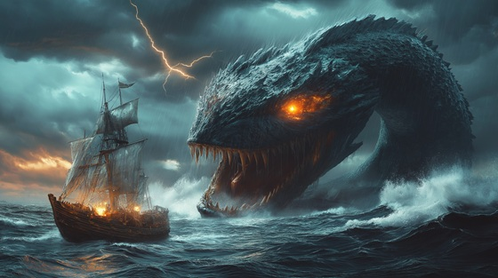

"The Serpent Beneath the Waves" tells the story of Sinbad confronting a monstrous sea serpent during one of his perilous voyages. Lurking in the crushing depths, the serpent embodies the unknown dangers of the open ocean. This track channels suspense, fear, and ultimate triumph as Sinbad faces the abyss itself, showing that courage and cunning can overcome even the most terrifying of legends.
The Serpent Beneath the Waves
Beneath the silver foam it hides,
A shadow where the ocean collides.
Eyes like embers, scales like stone,
The abyss awakens, I’m not alone.
Currents twist, the ship is torn,
A nightmare from the depths is born.
Tentacles coil, the waters rise,
A beast of legend before my eyes.
The serpent beneath the waves, it calls,
Its endless hunger devours all.
Through crushing depths, through swirling tides,
I face the terror where darkness hides.
Fins like razors, fangs like knives,
It stalks the dark, it breathes and thrives.
Every strike a maelstrom’s roar,
I cling to life, yet seek for more.
The ocean trembles beneath its sway,
A silent hunter in the fray.
Rising from the black abyss,
It drags the brave into the mist.
The serpent beneath the waves, it calls,
Its endless hunger devours all.
Through crushing depths, through swirling tides,
I face the terror where darkness hides.
Rocks collide, the ship is crushed,
Yet Sinbad stands, undaunted, hushed.
With courage sharp as a steel-bound blade,
The serpent’s shadow begins to fade.
Victory earned on the ocean floor,
The beast retreats, its hunger no more.
Depths of darkness, fury untamed,
A monster ancient, yet courage named.
Through swirling currents, death’s embrace,
I carve my path, I claim my place.
The serpent beneath the waves, it calls,
Its endless hunger devours all.
Through crushing depths, through swirling tides,
I face the terror where darkness hides.
The sea is calm, the horizon near,
Yet echoes of the serpent still I hear.
Sinbad sails on, fearless and brave,
Conqueror of the ocean’s wave.